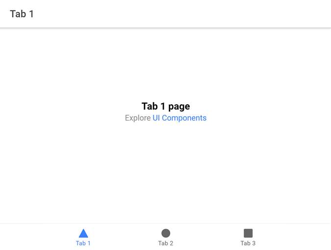
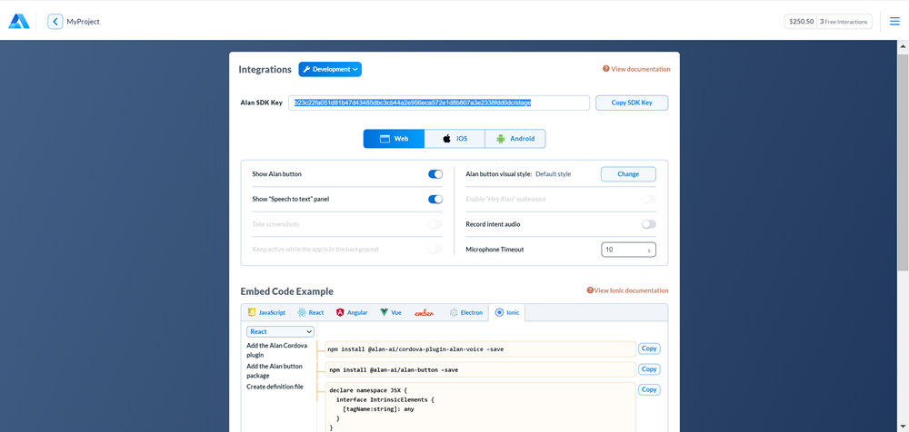

Building a voice assistant for an Ionic React app¶
With Alan AI SDK for Ionic, you can create a voice assistant or chatbot and embed it to your Ionic React app. The Alan AI Platform provides you with all the tools and leverages the industry’s best Automatic Speech Recognition (ASR), Spoken Language Understanding (SLU) and Speech Synthesis technologies to quickly build an AI assistant from scratch.
In this tutorial, we will create a simple Ionic app with three tabs. The app users will be able to click the voice assistant button and give custom voice commands on each tab, and Alan AI will reply to them.
What you will learn¶
How to add a voice interface to an Ionic React app
How to write simple voice commands for an Ionic app
What you will need¶
To go through this tutorial, make sure the following prerequisites are met:
You have signed up to Alan AI Studio.
You have created a project in Alan AI Studio.
The environment for using the Ionic framework is properly set up. For details, see Ionic documentation.
Note
When you sign up to Alan AI Studio, Alan AI adds free interactions to your balance to let you get started. To get additional interactions to your balance, link your Alan AI account with your GitHub account and give stars to Alan AI repositories. For details, see Adding free interactions.
Step 1: Install the Ionic CLI¶
Run the following command to install the Ionic CLI:
npm install -g ionic
Note
For this tutorial, we do not need the free Ionic Appflow SDK. If the Ionic CLI asks you during the installation process: Install the free Ionic Appflow SDK and connect your app? (y/n), choose no.
Step 2: Create a template Ionic app and run it¶
We will be using a React app template with tabs.
Navigate to the folder in which the app will reside and run the following command:
Terminal¶ionic start alan-react-ionic tabs --type=react
Switch to the folder with the app:
Terminal¶cd alan-react-ionic
Run the app:
Terminal¶ionic serve
In the browser, a new window with the app will be opened. Make sure you see the right UI:

Step 3: Install Alan AI SDK for Cordova and Alan AI Web components¶
We need to add the Alan AI SDK for Cordova component and the Alan AI Web component to the app.
Step 4: Add the Alan AI button to the app¶
Now we need to update our app to add the Alan AI button to it.
Create a wrapper component for the Alan AI button. To do this, in the
src/componentsfolder, create theAlanBtn.tsxfile with the following content:AlanBtn.tsx¶import React, { useEffect, useRef, } from 'react'; import { withRouter } from 'react-router'; const AlanBtn: React.FC = (props: any) => { const alanBtnComponent = useRef<any>(null); useEffect(() => { alanBtnComponent.current.addEventListener('command', (data: CustomEvent) => { const commandData = data.detail; if (commandData.command === 'command') { /* Call client code that will react to the received command */ } }); }, []); return <alan-button ref={alanBtnComponent} alan-key="YOUR_KEY_FROM_ALAN_STUDIO_HERE" />; }; export default withRouter(AlanBtn);
In the
alan-buttontag above, we need to replaceYOUR_KEY_FROM_ALAN_STUDIO_HEREwith the Alan AI SDK key for our Alan AI Studio project. In Alan AI Studio, at the top of the code editor, click Integrations, copy the code provided in the Alan SDK Key field and paste this code toalan-key.In the
srcfolder, open theApp.tsxfile and update it to add the Alan AI button.In the
srcfolder, create the typescript declaration file namedalan-btn.d.tswith the following content:alan-btn.d.ts¶declare namespace JSX { interface IntrinsicElements { [tagName:string]: any } }
The final step is to add the Alan AI button loader to the entry point of our app. In the
srcfolder, open theindex.tsxfile and add the following:index.tsx¶import { applyPolyfills, defineCustomElements, } from '@alan-ai/alan-button/dist/loader'; applyPolyfills().then(_ => { defineCustomElements(); });
Run the app. On all app tabs, we can see the Alan AI button. Click it and say: Hello.
Step 5. Add voice commands¶
Let’s add some voice commands so that we can interact with Alan AI. In Alan AI Studio, open the project and in the code editor, add the following intents:
intent('What is your name?', p => {
p.play('It is Alan, and yours?');
});
intent('How are you doing?', p => {
p.play('Good, thank you. What about you?');
});
Now in the app click the Alan AI button and ask: What is your name? and How are you doing? The AI assistant will give responses provided in the intents.
What’s next?¶
You can now proceed to building a voice interface with Alan AI. Use the following resources:
Have a look at the next tutorial: Navigating between tabs in an Ionic React app.
Go to Dialog script concepts to learn about Alan AI’s concepts and functionality you can use to create a dialog script.